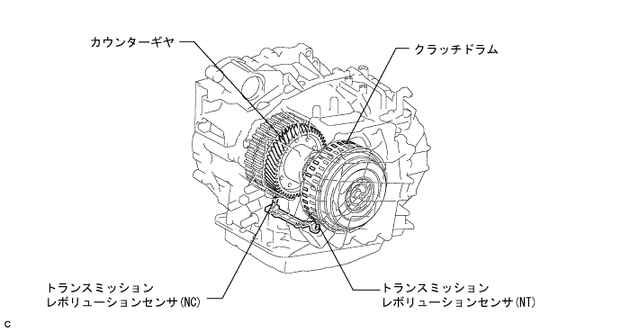
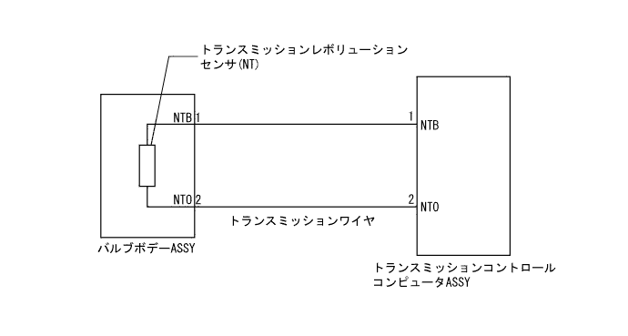
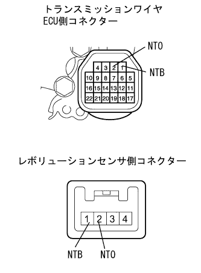

DTC P0715/37 Turbine Speed Sensor Circuit |
DTC P0717/37 Speed Sensor Circuit |

| DTC No. SAE/TCCS | DTC Detection Conditions 1. Diagnosis conditions 2. Malfunction status 3. Malfunction duration 4. Other | Inspection Area |
|---|---|---|
| P0715/37 |
|
|
| P0717/37 |
|
|

| Step 1 | Inspect Sensor Installation Condition |
 |
Check the installation condition of the transmission revolution sensor.
|
| ||||
| OK | |
| Step 2 | Inspect Transmission Wire |
 |
for reference.Remove the transmission control computer. (see)
Disconnect the transmission wire from the transmission revolution sensor.
Using SST (Toyota electrical tester), measure the resistance between the terminals.
| Tester Connection (Terminal Symbol) | Condition | Standard |
|---|---|---|
| 1(NTB) - 1(NTB) | Always | Below 1 Ω |
| 2(NTO) - 2(NTO) | Always | Below 1 Ω |
| Tester Connection (Terminal Symbol) | Condition | Standard |
|---|---|---|
| 1 (NTB) and 1 (NTB) - Other terminals or body ground | Always | 10k Ω or higher |
| 2 (NTO) and 2 (NTO - Other terminals or body ground | Always | 10k Ω or higher |
|
| ||||
| OK | |
| Step 3 | Replace Transmission Revolution Sensor |
Replace the transmission revolution sensor. (see)
| NEXT | |
| Step 4 | Clear DTCs and Perform Road Test |
Clear the DTCs. (see)
Perform a road test based on the customer problem analysis and freeze frame data.
| NEXT | |
| Step 5 | Recheck DTC |
Recheck the DTCs. (see)
| Result | Proceed to |
|---|---|
| P0715 or P0717 is output again | A |
| DTC normal | B |
|
| ||||
| A | |
| Step 6 | Replace Transmission Control Computer Assembly |
Replace the transmission control computer assembly. (see)
| NEXT | ||
| ||